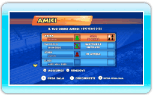
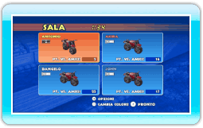
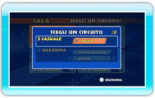
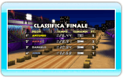

18 |
Modalità Vs. Amici |
 |
|
Nella modalità Vs. amici puoi gareggiare contro i tuoi amici tramite la Nintendo Wi-Fi Connection.
 Lo schermo amici mostra lo stato dei tuoi amici registrati (vedi sotto). Per partecipare a una gara, scegli un amico con una sala aperta e premi
 . Per creare una sala, premi . Per creare una sala, premi  e poi attendi che i tuoi amici vi entrino. e poi attendi che i tuoi amici vi entrino.
 Scegli il colore della tua moto nello schermo sala premendo
 . Premi per confermare la tua scelta. Se vuoi abbandonare la gara, premi . Premi per confermare la tua scelta. Se vuoi abbandonare la gara, premi  per accedere al menu opzioni sala, poi seleziona LASCIA SALA. per accedere al menu opzioni sala, poi seleziona LASCIA SALA.
 Scegli un circuito che hai già sbloccato o che hai creato tu. Puoi anche selezionare l’opzione CASUALE. Una volta che tutti i giocatori hanno selezionato un circuito, il gioco ne sceglie uno in modo casuale.
 Alla fine della gara, ti saranno assegnati dei punti Vs. amici in base alla tua posizione in classifica. Questi punti ti permettono di sbloccare decorazioni speciali per la tua moto.
|
 |
 |
 |